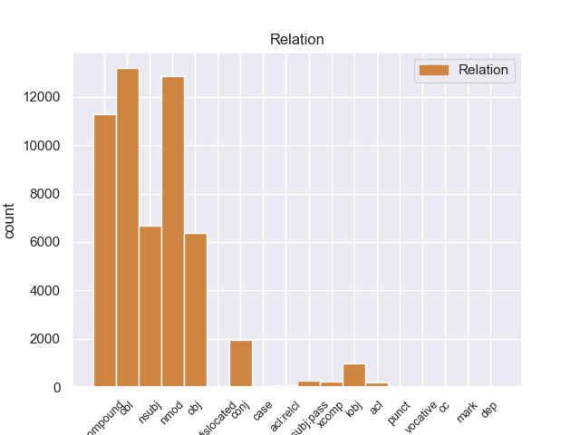
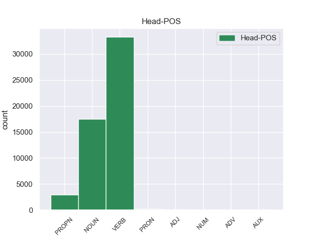
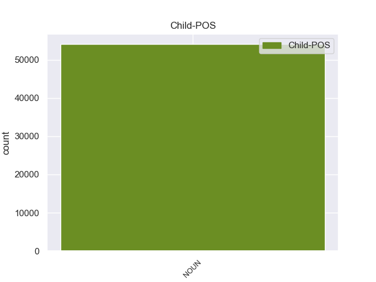

Distribution of features within this leaf



Agreement Rules sorted by frequency.
- When the dependent token is the compound(compound) of the head token, and the dependent token is NOUN.
1 उन्होंने _ _ _ _ 0 _ _ _
2 यहां _ _ _ _ 0 _ _ _
3 वेटिकन _ _ _ _ 0 _ _ _
4 दूतावास _ _ _ _ 0 _ _ _
5 में _ _ _ _ 0 _ _ _
6 एक _ _ _ _ 0 _ _ _
7 शोक _ _ _ _ 0 _ _ _
8 पुस्तिका _ _ _ _ 0 _ _ _
9 पर _ _ _ _ 0 _ _ _
10 हस्ताक्षर _ _ _ _ 0 _ _ _
11 कर _ _ _ _ 0 _ _ _
12 पोप पोप NOUN NNC Case=Nom|Gender=Masc|Number=Sing|Person=3 15 compound _ ChunkId=NP6|ChunkType=child|Tam=0|Translit=popa|Vib=0
13 जॉन _ _ _ _ 0 _ _ _
14 पॉल _ _ _ _ 0 _ _ _
15 द्वितीय द्वितीय PROPN NNP Case=Acc|Gender=Masc|Number=Sing|Person=3 0 _ _ _
16 के _ _ _ _ 0 _ _ _
17 निधन _ _ _ _ 0 _ _ _
18 पर _ _ _ _ 0 _ _ _
19 गहरा _ _ _ _ 0 _ _ _
20 दुख _ _ _ _ 0 _ _ _
21 प्रकट _ _ _ _ 0 _ _ _
22 किया _ _ _ _ 0 _ _ _
23 । _ _ _ _ 0 _ _ _
1 उन्होंने _ _ _ _ 0 _ _ _
2 यहां _ _ _ _ 0 _ _ _
3 वेटिकन _ _ _ _ 0 _ _ _
4 दूतावास _ _ _ _ 0 _ _ _
5 में _ _ _ _ 0 _ _ _
6 एक _ _ _ _ 0 _ _ _
7 शोक _ _ _ _ 0 _ _ _
8 पुस्तिका _ _ _ _ 0 _ _ _
9 पर _ _ _ _ 0 _ _ _
10 हस्ताक्षर _ _ _ _ 0 _ _ _
11 कर _ _ _ _ 0 _ _ _
12 पोप _ _ _ _ 0 _ _ _
13 जॉन _ _ _ _ 0 _ _ _
14 पॉल _ _ _ _ 0 _ _ _
15 द्वितीय _ _ _ _ 0 _ _ _
16 के _ _ _ _ 0 _ _ _
17 निधन निधन NOUN NN Case=Acc|Gender=Masc|Number=Sing|Person=3 22 obl _ ChunkId=NP7|ChunkType=head|Tam=0|Translit=nidhana|Vib=0_पर
18 पर _ _ _ _ 0 _ _ _
19 गहरा _ _ _ _ 0 _ _ _
20 दुख _ _ _ _ 0 _ _ _
21 प्रकट _ _ _ _ 0 _ _ _
22 किया कर VERB VM Aspect=Perf|Gender=Masc|Number=Sing|VerbForm=Part|Voice=Act 0 _ _ _
23 । _ _ _ _ 0 _ _ _
1 दलाई _ _ _ _ 0 _ _ _
2 लामा _ _ _ _ 0 _ _ _
3 ने _ _ _ _ 0 _ _ _
4 भारत _ _ _ _ 0 _ _ _
5 और _ _ _ _ 0 _ _ _
6 चीन _ _ _ _ 0 _ _ _
7 के _ _ _ _ 0 _ _ _
8 रिश्ते _ _ _ _ 0 _ _ _
9 में _ _ _ _ 0 _ _ _
10 आ _ _ _ _ 0 _ _ _
11 रहे _ _ _ _ 0 _ _ _
12 सुधार सुधार NOUN NN Case=Acc|Gender=Masc|Number=Sing|Person=3 15 nmod _ ChunkId=NP5|ChunkType=head|Tam=0|Translit=sudhāra|Vib=0_का
13 की _ _ _ _ 0 _ _ _
14 भी _ _ _ _ 0 _ _ _
15 प्रशंसा प्रशंसा NOUN NN Case=Nom|Gender=Fem|Number=Sing|Person=3 0 _ _ _
16 की _ _ _ _ 0 _ _ _
17 । _ _ _ _ 0 _ _ _
1 इन _ _ _ _ 0 _ _ _
2 दोनों _ _ _ _ 0 _ _ _
3 देशों _ _ _ _ 0 _ _ _
4 के _ _ _ _ 0 _ _ _
5 बीच _ _ _ _ 0 _ _ _
6 रिश्ते _ _ _ _ 0 _ _ _
7 में _ _ _ _ 0 _ _ _
8 सुधार _ _ _ _ 0 _ _ _
9 से _ _ _ _ 0 _ _ _
10 करोड़ों _ _ _ _ 0 _ _ _
11 लोगों _ _ _ _ 0 _ _ _
12 का _ _ _ _ 0 _ _ _
13 भला भला NOUN NN Case=Nom|Gender=Masc|Number=Sing|Person=3 14 nsubj _ ChunkId=NP5|ChunkType=head|Tam=0|Translit=bhalā|Vib=0
14 होगा हो VERB VM Gender=Masc|Mood=Ind|Number=Sing|Person=3|Tense=Fut|VerbForm=Fin|Voice=Act 0 _ _ _
15 । _ _ _ _ 0 _ _ _
1 उन्होंने _ _ _ _ 0 _ _ _
2 यहां _ _ _ _ 0 _ _ _
3 वेटिकन _ _ _ _ 0 _ _ _
4 दूतावास _ _ _ _ 0 _ _ _
5 में _ _ _ _ 0 _ _ _
6 एक _ _ _ _ 0 _ _ _
7 शोक _ _ _ _ 0 _ _ _
8 पुस्तिका _ _ _ _ 0 _ _ _
9 पर _ _ _ _ 0 _ _ _
10 हस्ताक्षर _ _ _ _ 0 _ _ _
11 कर _ _ _ _ 0 _ _ _
12 पोप _ _ _ _ 0 _ _ _
13 जॉन _ _ _ _ 0 _ _ _
14 पॉल _ _ _ _ 0 _ _ _
15 द्वितीय _ _ _ _ 0 _ _ _
16 के _ _ _ _ 0 _ _ _
17 निधन _ _ _ _ 0 _ _ _
18 पर _ _ _ _ 0 _ _ _
19 गहरा _ _ _ _ 0 _ _ _
20 दुख दुख NOUN NN Case=Nom|Gender=Masc|Number=Sing|Person=3 22 obj _ ChunkId=NP8|ChunkType=head|Tam=0|Translit=dukha|Vib=0
21 प्रकट _ _ _ _ 0 _ _ _
22 किया कर VERB VM Aspect=Perf|Gender=Masc|Number=Sing|VerbForm=Part|Voice=Act 0 _ _ _
23 । _ _ _ _ 0 _ _ _
1 पर्यवेक्षकों _ _ _ _ 0 _ _ _
2 का _ _ _ _ 0 _ _ _
3 कहना _ _ _ _ 0 _ _ _
4 है _ _ _ _ 0 _ _ _
5 कि _ _ _ _ 0 _ _ _
6 इस _ _ _ _ 0 _ _ _
7 मार्च _ _ _ _ 0 _ _ _
8 के _ _ _ _ 0 _ _ _
9 दौरान _ _ _ _ 0 _ _ _
10 कांग्रेसियों _ _ _ _ 0 _ _ _
11 ने _ _ _ _ 0 _ _ _
12 भाजपा _ _ _ _ 0 _ _ _
13 का _ _ _ _ 0 _ _ _
14 जिक्र _ _ _ _ 0 _ _ _
15 करने _ _ _ _ 0 _ _ _
16 से _ _ _ _ 0 _ _ _
17 परहेज _ _ _ _ 0 _ _ _
18 कर _ _ _ _ 0 _ _ _
19 लोगों _ _ _ _ 0 _ _ _
20 में _ _ _ _ 0 _ _ _
21 यह _ _ _ _ 0 _ _ _
22 संदेश _ _ _ _ 0 _ _ _
23 दिया _ _ _ _ 0 _ _ _
24 कि _ _ _ _ 0 _ _ _
25 वह _ _ _ _ 0 _ _ _
26 गांधीवादी _ _ _ _ 0 _ _ _
27 विरासत _ _ _ _ 0 _ _ _
28 को _ _ _ _ 0 _ _ _
29 लेकर _ _ _ _ 0 _ _ _
30 भाजपा भाजपा PROPN NNP Case=Acc|Gender=Fem|Number=Sing|Person=3 0 _ _ _
31 या _ _ _ _ 0 _ _ _
32 किसी _ _ _ _ 0 _ _ _
33 अन्य _ _ _ _ 0 _ _ _
34 पार्टी पार्टी NOUN NN Case=Acc|Gender=Fem|Number=Sing|Person=3 30 conj _ ChunkId=NP12|ChunkType=head|Tam=0|Translit=pārṭī|Vib=0_से
35 से _ _ _ _ 0 _ _ _
36 टकराव _ _ _ _ 0 _ _ _
37 नहीं _ _ _ _ 0 _ _ _
38 चाहती _ _ _ _ 0 _ _ _
39 है _ _ _ _ 0 _ _ _
40 । _ _ _ _ 0 _ _ _
1 वोल्कर _ _ _ _ 0 _ _ _
2 ने _ _ _ _ 0 _ _ _
3 अखबार अखबार NOUN NN Case=Acc|Gender=Masc|Number=Sing|Person=3 5 iobj _ ChunkId=NP2|ChunkType=head|Tam=0|Translit=akhabāra|Vib=0_को
4 को _ _ _ _ 0 _ _ _
5 बताया बता VERB VM Aspect=Perf|Gender=Masc|Number=Sing|VerbForm=Part|Voice=Act 0 _ _ _
6 कि _ _ _ _ 0 _ _ _
7 वे _ _ _ _ 0 _ _ _
8 तैयार _ _ _ _ 0 _ _ _
9 हो _ _ _ _ 0 _ _ _
10 गए _ _ _ _ 0 _ _ _
11 । _ _ _ _ 0 _ _ _
1 सामान्य _ _ _ _ 0 _ _ _
2 शयनयान _ _ _ _ 0 _ _ _
3 श्रेणी _ _ _ _ 0 _ _ _
4 के _ _ _ _ 0 _ _ _
5 डिब्बों _ _ _ _ 0 _ _ _
6 वाली _ _ _ _ 0 _ _ _
7 यह _ _ _ _ 0 _ _ _
8 टूरिस्ट _ _ _ _ 0 _ _ _
9 स्पेशल _ _ _ _ 0 _ _ _
10 ट्रेन ट्रेन NOUN NN Case=Nom|Gender=Fem|Number=Sing|Person=3 19 nsubj:pass _ ChunkId=NP3|ChunkType=head|Tam=0|Translit=ṭrena|Vib=0
11 ' _ _ _ _ 0 _ _ _
12 पैलेस _ _ _ _ 0 _ _ _
13 ऑन _ _ _ _ 0 _ _ _
14 व्हील्स _ _ _ _ 0 _ _ _
15 ' _ _ _ _ 0 _ _ _
16 की _ _ _ _ 0 _ _ _
17 तरह _ _ _ _ 0 _ _ _
18 ही _ _ _ _ 0 _ _ _
19 चलाई चला VERB VM Aspect=Perf|Gender=Fem|Number=Sing|Person=3|VerbForm=Part|Voice=Pass 0 _ _ _
20 जाएगी _ _ _ _ 0 _ _ _
21 । _ _ _ _ 0 _ _ _
1 पासवान _ _ _ _ 0 _ _ _
2 ने _ _ _ _ 0 _ _ _
3 बृहस्पतिवार _ _ _ _ 0 _ _ _
4 को _ _ _ _ 0 _ _ _
5 उनके _ _ _ _ 0 _ _ _
6 कमांडो _ _ _ _ 0 _ _ _
7 वापस _ _ _ _ 0 _ _ _
8 लेने _ _ _ _ 0 _ _ _
9 के _ _ _ _ 0 _ _ _
10 राज्य _ _ _ _ 0 _ _ _
11 प्रशासन _ _ _ _ 0 _ _ _
12 के _ _ _ _ 0 _ _ _
13 प्रस्ताव _ _ _ _ 0 _ _ _
14 पर _ _ _ _ 0 _ _ _
15 कड़ी _ _ _ _ 0 _ _ _
16 नाराजगी नाराजगी NOUN NN Case=Nom|Gender=Fem|Number=Sing|Person=3 17 xcomp _ ChunkId=NP7|ChunkType=head|Tam=0|Translit=nārājagī|Vib=0
17 जताई जता VERB VM Aspect=Perf|Gender=Fem|Number=Sing|VerbForm=Part|Voice=Act 0 _ _ _
18 थी _ _ _ _ 0 _ _ _
19 और _ _ _ _ 0 _ _ _
20 चुनावों _ _ _ _ 0 _ _ _
21 में _ _ _ _ 0 _ _ _
22 डीजीपी _ _ _ _ 0 _ _ _
23 की _ _ _ _ 0 _ _ _
24 भूमिका _ _ _ _ 0 _ _ _
25 संदिग्ध _ _ _ _ 0 _ _ _
26 होने _ _ _ _ 0 _ _ _
27 का _ _ _ _ 0 _ _ _
28 आरोप _ _ _ _ 0 _ _ _
29 लगाया _ _ _ _ 0 _ _ _
30 था _ _ _ _ 0 _ _ _
31 । _ _ _ _ 0 _ _ _
1 ग्रामीण _ _ _ _ 0 _ _ _
2 ज्ञान _ _ _ _ 0 _ _ _
3 केंद्र _ _ _ _ 0 _ _ _
4 को _ _ _ _ 0 _ _ _
5 उन्होंने _ _ _ _ 0 _ _ _
6 रोजगार _ _ _ _ 0 _ _ _
7 का _ _ _ _ 0 _ _ _
8 एक _ _ _ _ 0 _ _ _
9 अन्य _ _ _ _ 0 _ _ _
10 स्त्रोत स्त्रोत NOUN NN Case=Nom|Gender=Masc|Number=Sing|Person=3 11 acl _ ChunkId=NP4|ChunkType=head|Tam=0|Translit=strota|Vib=0
11 बताया बता VERB VM Aspect=Perf|Gender=Masc|Number=Sing|VerbForm=Part|Voice=Act 0 _ _ _
12 । _ _ _ _ 0 _ _ _
1 जम्मू _ _ _ _ 0 _ _ _
2 - _ _ _ _ 0 _ _ _
3 कश्मीर _ _ _ _ 0 _ _ _
4 पुलिस _ _ _ _ 0 _ _ _
5 द्वारा _ _ _ _ 0 _ _ _
6 भेजी _ _ _ _ 0 _ _ _
7 गई _ _ _ _ 0 _ _ _
8 अश्लील _ _ _ _ 0 _ _ _
9 सीडी _ _ _ _ 0 _ _ _
10 में _ _ _ _ 0 _ _ _
11 जो _ _ _ _ 0 _ _ _
12 लड़की लड़की NOUN NN Case=Nom|Gender=Fem|Number=Sing|Person=3 14 acl:relcl _ ChunkId=NP3|ChunkType=head|Tam=0|Translit=laṛakī|Vib=0
13 है _ _ _ _ 0 _ _ _
14 वह वह PRON PRP Case=Nom|Number=Sing|Person=3|PronType=Prs 0 _ _ _
15 पूर्व _ _ _ _ 0 _ _ _
16 मिस _ _ _ _ 0 _ _ _
17 जम्मू _ _ _ _ 0 _ _ _
18 अनारा _ _ _ _ 0 _ _ _
19 गुप्ता _ _ _ _ 0 _ _ _
20 नहीं _ _ _ _ 0 _ _ _
21 है _ _ _ _ 0 _ _ _
22 । _ _ _ _ 0 _ _ _
1 उन्होंने _ _ _ _ 0 _ _ _
2 कहा _ _ _ _ 0 _ _ _
3 कि _ _ _ _ 0 _ _ _
4 दक्षिण _ _ _ _ 0 _ _ _
5 इराक़ _ _ _ _ 0 _ _ _
6 के _ _ _ _ 0 _ _ _
7 बसरा _ _ _ _ 0 _ _ _
8 क्षेत्र _ _ _ _ 0 _ _ _
9 के _ _ _ _ 0 _ _ _
10 आस आस NOUN NSTC AdpType=Post|Case=Nom|Gender=Masc|Number=Sing|Person=3 12 case _ AltTag=nst-NOUN|ChunkId=NP4|ChunkType=child|Translit=āsa
11 - _ _ _ _ 0 _ _ _
12 पास पास ADV NST AdpType=Post|Case=Acc|Gender=Masc|Number=Sing|Person=3 0 _ _ _
13 के _ _ _ _ 0 _ _ _
14 इलाकों _ _ _ _ 0 _ _ _
15 में _ _ _ _ 0 _ _ _
16 दोनों _ _ _ _ 0 _ _ _
17 देशों _ _ _ _ 0 _ _ _
18 द्वारा _ _ _ _ 0 _ _ _
19 संयुक्त _ _ _ _ 0 _ _ _
20 रूप _ _ _ _ 0 _ _ _
21 से _ _ _ _ 0 _ _ _
22 तेल _ _ _ _ 0 _ _ _
23 भंडार _ _ _ _ 0 _ _ _
24 का _ _ _ _ 0 _ _ _
25 पता _ _ _ _ 0 _ _ _
26 लगाया _ _ _ _ 0 _ _ _
27 जाएगा _ _ _ _ 0 _ _ _
28 । _ _ _ _ 0 _ _ _
1 इस _ _ _ _ 0 _ _ _
2 प्लॉन _ _ _ _ 0 _ _ _
3 पर _ _ _ _ 0 _ _ _
4 कोई _ _ _ _ 0 _ _ _
5 क्लिप क्लिप NOUN NN Case=Nom|Gender=Masc|Number=Sing|Person=3 15 dislocated _ ChunkId=NP2|ChunkType=head|Tam=0|Translit=klipa|Vib=0
6 ( _ _ _ _ 0 _ _ _
7 फोन _ _ _ _ 0 _ _ _
8 करने _ _ _ _ 0 _ _ _
9 वाले _ _ _ _ 0 _ _ _
10 के _ _ _ _ 0 _ _ _
11 नंबर _ _ _ _ 0 _ _ _
12 की _ _ _ _ 0 _ _ _
13 पहचान _ _ _ _ 0 _ _ _
14 ) _ _ _ _ 0 _ _ _
15 शुल्क शुल्क NOUN NN Case=Nom|Gender=Masc|Number=Sing|Person=3 0 _ _ _
16 नहीं _ _ _ _ 0 _ _ _
17 लगेगा _ _ _ _ 0 _ _ _
18 । _ _ _ _ 0 _ _ _
1 उसने _ _ _ _ 0 _ _ _
2 तालिब _ _ _ _ 0 _ _ _
3 की _ _ _ _ 0 _ _ _
4 मां _ _ _ _ 0 _ _ _
5 खुशनूदा _ _ _ _ 0 _ _ _
6 से _ _ _ _ 0 _ _ _
7 कहा _ _ _ _ 0 _ _ _
8 : _ _ _ _ 0 _ _ _
9 अम्मी अम्मी NOUN NN Case=Nom|Gender=Fem|Number=Sing|Person=3 14 vocative _ ChunkId=NP5|ChunkType=head|Tam=0|Translit=ammī|Vib=0
10 मैं _ _ _ _ 0 _ _ _
11 आज _ _ _ _ 0 _ _ _
12 से _ _ _ _ 0 _ _ _
13 आपकी _ _ _ _ 0 _ _ _
14 बहू बहू NOUN NN Case=Nom|Gender=Fem|Number=Sing|Person=3 0 _ _ _
15 हूं _ _ _ _ 0 _ _ _
16 । _ _ _ _ 0 _ _ _
1 शर्मा _ _ _ _ 0 _ _ _
2 इन _ _ _ _ 0 _ _ _
3 दिनों _ _ _ _ 0 _ _ _
4 पुलिस _ _ _ _ 0 _ _ _
5 से _ _ _ _ 0 _ _ _
6 नजरें _ _ _ _ 0 _ _ _
7 बचाकर _ _ _ _ 0 _ _ _
8 गुड़गांव _ _ _ _ 0 _ _ _
9 व _ _ _ _ 0 _ _ _
10 आस आस NOUN NSTC AdpType=Post|Case=Nom|Gender=Masc|Number=Sing|Person=3 12 cc _ AltTag=nst-NOUN|ChunkId=NP6|ChunkType=child|Translit=āsa
11 - _ _ _ _ 0 _ _ _
12 पास पास ADV NST AdpType=Post|Case=Acc|Gender=Masc|Number=Sing|Person=3 0 _ _ _
13 के _ _ _ _ 0 _ _ _
14 इलाकों _ _ _ _ 0 _ _ _
15 में _ _ _ _ 0 _ _ _
16 प्रॉपर्टी _ _ _ _ 0 _ _ _
17 का _ _ _ _ 0 _ _ _
18 धंधा _ _ _ _ 0 _ _ _
19 कर _ _ _ _ 0 _ _ _
20 रहा _ _ _ _ 0 _ _ _
21 था _ _ _ _ 0 _ _ _
22 । _ _ _ _ 0 _ _ _
1 सम्मेलन _ _ _ _ 0 _ _ _
2 में _ _ _ _ 0 _ _ _
3 आए _ _ _ _ 0 _ _ _
4 विभिन्न _ _ _ _ 0 _ _ _
5 राज्यों _ _ _ _ 0 _ _ _
6 के _ _ _ _ 0 _ _ _
7 प्रतिनिधियों _ _ _ _ 0 _ _ _
8 ने _ _ _ _ 0 _ _ _
9 कहा _ _ _ _ 0 _ _ _
10 कि _ _ _ _ 0 _ _ _
11 दूर दूर NOUN NSTC AdpType=Post|Case=Nom|Gender=Masc|Number=Sing|Person=3 13 mark _ AltTag=nst-NOUN|ChunkId=NP4|ChunkType=child|Translit=dūra
12 - _ _ _ _ 0 _ _ _
13 दराज दराज ADV NST AdpType=Post|Case=Acc|Gender=Masc|Number=Sing|Person=3 0 _ _ _
14 या _ _ _ _ 0 _ _ _
15 हाशिए _ _ _ _ 0 _ _ _
16 के _ _ _ _ 0 _ _ _
17 गाँवों _ _ _ _ 0 _ _ _
18 में _ _ _ _ 0 _ _ _
19 रहने _ _ _ _ 0 _ _ _
20 वाले _ _ _ _ 0 _ _ _
21 बुजुर्गो _ _ _ _ 0 _ _ _
22 के _ _ _ _ 0 _ _ _
23 लिए _ _ _ _ 0 _ _ _
24 जिला _ _ _ _ 0 _ _ _
25 केंद्र _ _ _ _ 0 _ _ _
26 तक _ _ _ _ 0 _ _ _
27 आना _ _ _ _ 0 _ _ _
28 व्यवहारिक _ _ _ _ 0 _ _ _
29 रूप _ _ _ _ 0 _ _ _
30 से _ _ _ _ 0 _ _ _
31 संभव _ _ _ _ 0 _ _ _
32 नहीं _ _ _ _ 0 _ _ _
33 होगा _ _ _ _ 0 _ _ _
34 । _ _ _ _ 0 _ _ _
1 पहले पहला NOUN NSTC AdpType=Post|Case=Nom|Gender=Masc|Number=Sing|Person=3 2 punct _ AltTag=nst-NOUN|ChunkId=NP|ChunkType=child|Translit=pahale
2 पहल पहल ADV NST AdpType=Post|Case=Nom|Gender=Fem|Number=Sing|Person=3 0 _ _ _
3 यह _ _ _ _ 0 _ _ _
4 एक _ _ _ _ 0 _ _ _
5 फ्रेंच _ _ _ _ 0 _ _ _
6 महल _ _ _ _ 0 _ _ _
7 था _ _ _ _ 0 _ _ _
8 जिसे _ _ _ _ 0 _ _ _
9 बाद _ _ _ _ 0 _ _ _
10 में _ _ _ _ 0 _ _ _
11 म्यूजियम _ _ _ _ 0 _ _ _
12 का _ _ _ _ 0 _ _ _
13 रूप _ _ _ _ 0 _ _ _
14 दे _ _ _ _ 0 _ _ _
15 दिया _ _ _ _ 0 _ _ _
16 गया _ _ _ _ 0 _ _ _
17 था _ _ _ _ 0 _ _ _
18 । _ _ _ _ 0 _ _ _
1 इससे _ _ _ _ 0 _ _ _
2 सीडी _ _ _ _ 0 _ _ _
3 में _ _ _ _ 0 _ _ _
4 निरंतरता _ _ _ _ 0 _ _ _
5 नहीं _ _ _ _ 0 _ _ _
6 है _ _ _ _ 0 _ _ _
7 और _ _ _ _ 0 _ _ _
8 तस्वीरें _ _ _ _ 0 _ _ _
9 भी _ _ _ _ 0 _ _ _
10 ऊपर ऊपर NOUN NSTC AdpType=Post|Case=Nom|Gender=Masc|Number=Sing|Person=3 12 dep _ AltTag=nst-NOUN|ChunkId=NP5|ChunkType=child|Translit=ūpara
11 - _ _ _ _ 0 _ _ _
12 नीचे नीचे ADV NST AdpType=Post|Case=Nom|Gender=Masc|Number=Sing|Person=3 0 _ _ _
13 उछलती _ _ _ _ 0 _ _ _
14 नजर _ _ _ _ 0 _ _ _
15 आई _ _ _ _ 0 _ _ _
16 हैं _ _ _ _ 0 _ _ _
17 । _ _ _ _ 0 _ _ _
Disagree Examples:
1 जिसमें _ _ _ _ 0 _ _ _
2 चार _ _ _ _ 0 _ _ _
3 मेहराबें _ _ _ _ 0 _ _ _
4 हैं _ _ _ _ 0 _ _ _
5 और _ _ _ _ 0 _ _ _
6 मुख्य _ _ _ _ 0 _ _ _
7 प्रार्थना _ _ _ _ 0 _ _ _
8 हॉल हॉल NOUN NN Case=Acc|Gender=Masc|Number=Sing|Person=3 16 obl _ ChunkId=NP3|ChunkType=head|Tam=0|Translit=hôla|Vib=0_में
9 में _ _ _ _ 0 _ _ _
10 जाने _ _ _ _ 0 _ _ _
11 के _ _ _ _ 0 _ _ _
12 लिए _ _ _ _ 0 _ _ _
13 9 _ _ _ _ 0 _ _ _
14 प्रवेश _ _ _ _ 0 _ _ _
15 द्वार _ _ _ _ 0 _ _ _
16 हैं है VERB VM Mood=Ind|Number=Plur|Person=3|Tense=Pres|VerbForm=Fin|Voice=Act 0 _ _ _
17 । _ _ _ _ 0 _ _ _
1 जिसमें _ _ _ _ 0 _ _ _
2 चार _ _ _ _ 0 _ _ _
3 मेहराबें _ _ _ _ 0 _ _ _
4 हैं _ _ _ _ 0 _ _ _
5 और _ _ _ _ 0 _ _ _
6 मुख्य _ _ _ _ 0 _ _ _
7 प्रार्थना _ _ _ _ 0 _ _ _
8 हॉल _ _ _ _ 0 _ _ _
9 में _ _ _ _ 0 _ _ _
10 जाने _ _ _ _ 0 _ _ _
11 के _ _ _ _ 0 _ _ _
12 लिए _ _ _ _ 0 _ _ _
13 9 _ _ _ _ 0 _ _ _
14 प्रवेश प्रवेश NOUN NNC Case=Nom|Gender=Masc|Number=Sing|Person=3 15 compound _ ChunkId=NP4|ChunkType=child|Tam=0|Translit=praveśa|Vib=0
15 द्वार द्वार NOUN NN Case=Nom|Gender=Masc|Number=Plur|Person=3 0 _ _ _
16 हैं _ _ _ _ 0 _ _ _
17 । _ _ _ _ 0 _ _ _
1 यहाँ _ _ _ _ 0 _ _ _
2 लगने _ _ _ _ 0 _ _ _
3 वाला _ _ _ _ 0 _ _ _
4 तीन _ _ _ _ 0 _ _ _
5 दिन _ _ _ _ 0 _ _ _
6 का _ _ _ _ 0 _ _ _
7 इज्तिमा _ _ _ _ 0 _ _ _
8 पूरे _ _ _ _ 0 _ _ _
9 देश देश NOUN NN Case=Acc|Gender=Masc|Number=Sing|Person=3 11 nmod _ ChunkId=NP4|ChunkType=head|Tam=0|Translit=deśa|Vib=0_का
10 के _ _ _ _ 0 _ _ _
11 लोगों लोग NOUN NN Case=Acc|Gender=Masc|Number=Plur|Person=3 0 _ _ _
12 को _ _ _ _ 0 _ _ _
13 आमंत्रित _ _ _ _ 0 _ _ _
14 करता _ _ _ _ 0 _ _ _
15 है _ _ _ _ 0 _ _ _
16 । _ _ _ _ 0 _ _ _
1 यहाँ _ _ _ _ 0 _ _ _
2 लगने _ _ _ _ 0 _ _ _
3 वाला _ _ _ _ 0 _ _ _
4 तीन _ _ _ _ 0 _ _ _
5 दिन _ _ _ _ 0 _ _ _
6 का _ _ _ _ 0 _ _ _
7 इज्तिमा _ _ _ _ 0 _ _ _
8 पूरे _ _ _ _ 0 _ _ _
9 देश _ _ _ _ 0 _ _ _
10 के _ _ _ _ 0 _ _ _
11 लोगों लोग NOUN NN Case=Acc|Gender=Masc|Number=Plur|Person=3 14 obj _ ChunkId=NP5|ChunkType=head|Tam=0|Translit=logoṁ|Vib=0_को
12 को _ _ _ _ 0 _ _ _
13 आमंत्रित _ _ _ _ 0 _ _ _
14 करता कर VERB VM Aspect=Imp|Gender=Masc|Number=Sing|Person=3|VerbForm=Part|Voice=Act 0 _ _ _
15 है _ _ _ _ 0 _ _ _
16 । _ _ _ _ 0 _ _ _
1 यहीं _ _ _ _ 0 _ _ _
2 पर _ _ _ _ 0 _ _ _
3 एक _ _ _ _ 0 _ _ _
4 कला _ _ _ _ 0 _ _ _
5 संग्रहालय संग्रहालय NOUN NN Case=Nom|Gender=Masc|Number=Sing|Person=3 0 _ _ _
6 , _ _ _ _ 0 _ _ _
7 कला _ _ _ _ 0 _ _ _
8 दीर्घा _ _ _ _ 0 _ _ _
9 , _ _ _ _ 0 _ _ _
10 फाइन _ _ _ _ 0 _ _ _
11 आर्ट _ _ _ _ 0 _ _ _
12 के _ _ _ _ 0 _ _ _
13 लिए _ _ _ _ 0 _ _ _
14 कार्यशाला _ _ _ _ 0 _ _ _
15 , _ _ _ _ 0 _ _ _
16 एक _ _ _ _ 0 _ _ _
17 थिएटर _ _ _ _ 0 _ _ _
18 , _ _ _ _ 0 _ _ _
19 अंतरंग _ _ _ _ 0 _ _ _
20 और _ _ _ _ 0 _ _ _
21 बहिरंग _ _ _ _ 0 _ _ _
22 ऑडिटोरियम ऑडिटोरियम NOUN NN Case=Nom|Gender=Masc|Number=Plur|Person=3 5 conj _ ChunkId=NP7|ChunkType=head|SpaceAfter=No|Tam=0|Translit=ôḍiṭoriyama|Vib=0
23 , _ _ _ _ 0 _ _ _
24 रिहर्सल _ _ _ _ 0 _ _ _
25 कक्ष _ _ _ _ 0 _ _ _
26 , _ _ _ _ 0 _ _ _
27 भारतीय _ _ _ _ 0 _ _ _
28 कविताओं _ _ _ _ 0 _ _ _
29 का _ _ _ _ 0 _ _ _
30 पुस्तकालय _ _ _ _ 0 _ _ _
31 , _ _ _ _ 0 _ _ _
32 शास्त्रीय _ _ _ _ 0 _ _ _
33 और _ _ _ _ 0 _ _ _
34 लोक _ _ _ _ 0 _ _ _
35 संगीत _ _ _ _ 0 _ _ _
36 संग्रहालय _ _ _ _ 0 _ _ _
37 भी _ _ _ _ 0 _ _ _
38 हैं _ _ _ _ 0 _ _ _
39 । _ _ _ _ 0 _ _ _